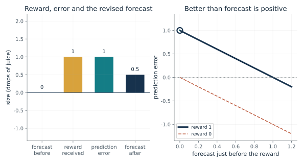
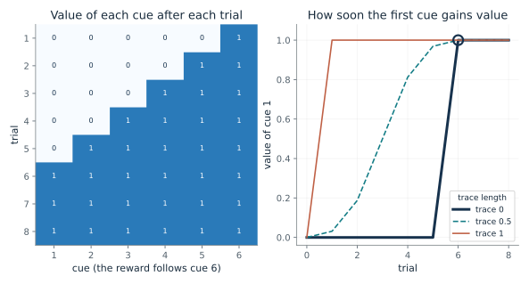
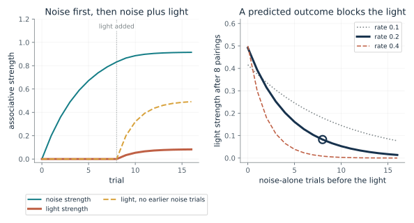
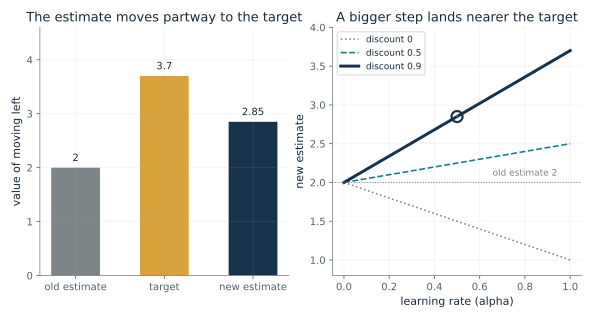
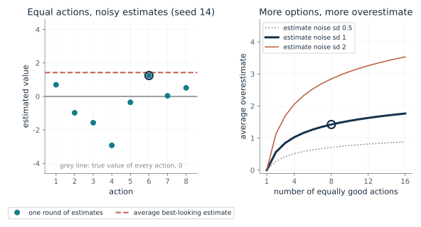
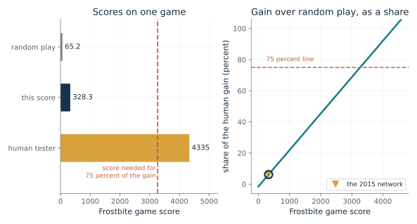
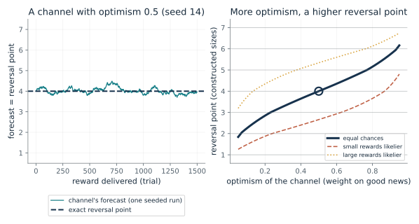

How much should a surprise change a forecast?
From Chapter 14, Dopamine cells burst at surprise juice and dipped when juice failed
A monkey that has learned a light predicts juice gets juice, or does not. What is the prediction error, and how far does the forecast move?
The forecast before the reward is what the learner expected. The error compares it with what came, plus whatever the learner forecasts afterwards. A positive error says things went better than forecast, a negative one worse, and zero means the forecast was right. The update then moves the forecast a share alpha of the way, so one outcome does not become the whole truth.
Predict first: The light has taught a forecast of 1. Predict the error when juice arrives, when it fails, and when juice arrives with no light, then check each against the controls.

Forecast before the reward: 0.0 · Reward received (drops): 1 · Learning rate (alpha): 0.5
What happens: A forecast of 0.4 and an outcome of 1 give an error of 0.6, and the forecast moves halfway at rate 0.5 to 0.7. Set the forecast to 1 and the reward to 1 to see the error vanish, and the reward to 0 to see it turn negative.
The learner forecast 0 and received 1, so the error is 1, which is positive (burst-like). With learning rate 0.5 the forecast moves by 0.5 to 0.5, not all the way to the outcome.
- Prediction error
- 1
- Sign
- positive (burst-like)
- Forecast after the update
- 0.5
- Forecast moves by
- 0.5
A learner that corrects itself by the size and sign of its surprise needs no teacher to say what the right forecast was. When nothing is surprising, nothing changes.
The 1997 review set recordings of monkey dopamine cells beside this error: a burst at surprise juice, none at expected juice, a dip when expected juice failed. The match is in sign and timing only, and the book names a mismatch (early juice).
A learner computes the error explicitly and applies the update. A reward here is a number supplied by the task, not a claim that the machine feels pleasure.
Show the calculation
delta = r + gamma x V(next) - V(now) = 1 + 0 - 0 = 1, because the task ends after the reward and nothing more is forecast. V(new) = V(old) + alpha x delta = 0 + 0.5 x 1 = 0.5.
The equations and symbols
- delta
- prediction error: reward plus discounted next forecast, minus the forecast held before
- r
- the reward received, in drops of juice
- V
- a forecast of the rewards to come from a situation
- gamma
- the discount on later rewards; here nothing follows the juice, so it drops out
- alpha
- learning rate, between zero and one
The task ends after the reward, so the next situation is worth zero. The error is a number in a model; the book says it has no real units and cannot be compared with spike counts. A reward is a number the task supplies, not pleasure.
Check your understanding: The forecast is 0.5, the reward is 1, and alpha is 0.5. What are the error and the new forecast?
Book source: Chapter 14, Dopamine cells burst at surprise juice and dipped when juice failed. Illustration C14-D01. Formula. Book formulas and the chapter's illustrative numbers: forecast 1 with juice gives 0, no juice gives minus 1, juice with no forecast gives plus 1, and the constructed forecast 0.4, outcome 1, rate 0.5 gives 0.7. The recordings behind the dopamine comparison are the 1997 review's Figure 1, which the book redraws as a schematic with no values.
How does credit travel back from the juice to the light?
From Chapter 14, Credit ran back from the juice to the light
If a reward follows the sixth of six cues, how many trials pass before the first cue gains value?
On the first trial only the last cue sees a reward, so only it gains value. On the next trial the fifth cue is followed by a cue that is now worth something, so it gains, and so on back to cue 1. A trace carries each error to the earlier cues in the same trial, so the whole chain learns together.
Predict first: With the plain method (trace 0) and learning rate 1, predict the trial on which cue 1 first gains value, and what a trace through all six changes.

Trace length (lambda; companion's addition, 0.5 is constructed): 0.0 · Learning rate (alpha): 1.0
What happens: A trace that lasts through all six cues gives every cue its value on trial 1. Return the trace to 0 to see the plain method: only cue 6 gains on trial 1, and cue 1 waits until trial 6.
With learning rate 1 and trace 0, cue 1 first gains value on trial 6. With no trace, value creeps back about one cue per trial.
- Cue 1 first gains value
- trial 6
- Cue 6 after trial 1
- 1
- Cue 1 after trial 1
- 0
- Cue 1 after 8 trials
- 1
The earliest event that reliably predicts a reward is the one worth reacting to. A learner finds it by correcting each forecast with the next, without waiting to see the final reward in every case.
In monkeys learning a light-and-lever task, fewer cells burst at the juice and more at the light as training went on. That is a population average, and it does not show that one cell was followed through learning.
The update is a specification: each cue's value is corrected from the next cue's value. The trace is a design choice that speeds the spread of credit.
Show the calculation
Each cue is updated from the cue after it, using the values held at the start of the trial: error = reward + value of the next cue - value of this cue. Cue 6 gets reward 1 and no next cue. Trial 1 gives cue 6 value 1 and cue 1 value 0; trace 0 passes on the later errors scaled by 0 per cue. The trace parameter is the companion's addition; the chapter states only the plain method and a trace through all six cues.
The equations and symbols
- delta_k
- the error at cue k, from values held at the start of the trial
- lambda
- how far a trace carries later errors back to earlier cues (0 is the plain method, 1 lasts through all six)
- alpha
- learning rate
- V
- the value of a cue
A single fixed chain, no discount, and every cue updated from values held at the start of the trial. In the brain, the corresponding shift of the burst from juice to light is a population average over cells recorded in different sessions; the cited reports do not follow one cell across days.
Check your understanding: With learning rate 1 and no trace, on which trial does cue 3 first gain value?
Book source: Chapter 14, Credit ran back from the juice to the light. Illustration C14-D02. Constructed example. The chapter's idealized chain: six cues, the reward after the sixth, no discount, learning rate 1, all values starting at 0. The companion adds the trace parameter lambda as one standard way to write a fading memory of recent cues; the chapter states only the two ends (no trace, and a trace through all six). Constructed example, not data.
Why does a cue added to a predicted outcome teach so little?
From Chapter 14, Blocking: rats learned little from a cue added to a predicted outcome
If a noise already predicts a shock, how much does a light added to it learn in eight pairings?
Each cue present learns a share of the gap between the outcome and the combined strength of all cues present. After enough noise-alone trials the noise already accounts for the outcome, so the gap at the first pairing is small and the light gains almost nothing. With no earlier trials the gap is large, and the two cues share it.
Predict first: Predict the light's strength after 8 pairings if the noise has already reached strength 1, then find how many noise-alone trials get close to that.

Noise-alone trials before the light: 8 · Learning-rate constant (c, made up): 0.2
What happens: After 16 noise-alone trials at rate 0.2 the noise holds strength 0.972, the gap left is 0.028, and the light gains only about 0.014 in 8 pairings, against about 0.49 when light and noise are learned together. Kamin's rats showed the same direction (a ratio of .45 near no effect, against .05).
After 8 noise-alone trials the noise holds strength 0.832, leaving a gap of 0.168 for the light to learn from. After 8 pairings the light has strength 0.0825, against 0.492 when light and noise were learned together.
- Light strength after 8 pairings
- 0.0825
- Same, light and noise learned together
- 0.492
- Gap left for learning at the first pairing
- 0.168
- Light as a share of the together value
- 0.168
A learner driven by error learns about a cue only to the extent that the cue is needed to explain a surprise. In this model, a redundant signal would be learned about only a little; the chapter does not claim animals follow the rule.
In 2013 rats were given a laser pulse at reward time to switch on dopamine cells during the pairing of sound plus light; they then responded more to the light on the first test trial (across all three test trials the difference was a trend). This supports sufficiency in that task, not necessity, and the cells' firing was not measured.
The rule is the same error-driven update as in the previous cards, applied to several cues at once. It is a specification for a learner, and a model of behavior for animals.
Show the calculation
Each cue present gains rate x (1 - combined strength) = 0.2 x gap per trial. Noise alone: strength = 1 - (1 - 0.2)^8 = 0.832. First pairing gap = 0.168. Light after 8 pairings = gap x (1 - (1 - 2 x 0.2)^8) / 2 = 0.0825. The rate 0.2 is a made-up constant, not fitted to the rats.
The equations and symbols
- V_X
- associative strength of cue X (noise or light)
- lambda_out
- the strength the outcome can support; 1 here
- c
- a learning-rate constant, a disclosed made-up value in this illustration
- sum
- the combined strength of all cues present on the trial
Both cues have the same learning rate and the outcome is the same size on every trial. The rule shows what blocking would look like, which does not show that rats follow it. The link joins two models of learning, not a brain and a machine.
Check your understanding: If the noise has reached strength 1 exactly, what does the light gain on the first pairing?
Book source: Chapter 14, Blocking: rats learned little from a cue added to a predicted outcome. Illustration C14-D03. Model. The rule is the Rescorla and Wagner update as the chapter states it (each cue present learns a share of the gap between the outcome and the combined strength of all cues present). The learning rates and trial counts follow the chapter's design (16 noise trials, then 8 pairings, against 8 pairings from the start); the rates are made up. Kamin's reported median suppression ratios, .05 for light and noise learned together and .45 for noise first, are context and are not fitted: a strength is not a suppression ratio.
How does a learner revise the value of an action?
From Chapter 14, Learning which action to take
Moving left is valued at 2, earns 1, and the best next option is valued at 3. What is the new estimate?
The target is what the experience suggests the action is worth: the reward now plus the discounted value of the best next option. The estimate is nudged toward it by a share alpha. A discount of zero ignores the future, and a learning rate of one replaces the estimate with the target.
Predict first: With a discount of 0.9 and a rate of 0.5, predict the new estimate, then predict what happens to it when the next situation ends the task.

Learning rate (alpha): 0.5 · Discount (gamma): 0.9 · The next situation ends the task (1 = yes): 0
What happens: If the next situation ends the task, the target is just the reward, 1, and the estimate falls from 2 to 1.5. In the continuing case the target is 3.7 and the estimate rises to 2.85.
The target is 3.7 (best next value 3 is counted), so the estimate of 2 moves a share 0.5 of the gap 1.7 to 2.85. A learning rate of 1 would jump all the way to the target.
- Target
- 3.7
- Gap, target minus estimate
- 1.7
- New estimate
- 2.85
- Share of the gap closed
- 0.5
Action values let a learner choose between actions from experience, without a model of the world. The discount sets how much later rewards count.
This is a specification of the update. A reward is a number the task supplies. A related update, with a neural network estimating the values from game images, was the 2015 Atari learner.
Show the calculation
Target = r + gamma x max Q(next) = 1 + 0.9 x 3 = 3.7. New = 2 + 0.5 x (3.7 - 2) = 2.85.
The equations and symbols
- Q
- estimated total future reward from taking an action in a situation
- r
- the reward just received
- gamma
- the discount on later rewards
- max Q(s', a')
- the best estimated value available in the next situation, zero if the task ends
- alpha
- learning rate, the share of the gap used for the correction
A table of action values for one situation and action. The target counts the best next action even when the learner explores and tries something else. A deep Q-network learns toward a related target by training a network, not by replacing a table entry.
Check your understanding: With estimate 2, reward 1, best next value 3, discount 0.5 and rate 0.5, what is the new estimate?
Book source: Chapter 14, Learning which action to take. Illustration C14-D04. Formula. Book formula with the chapter's constructed numbers (estimate 2, reward 1, best next value 3, discount 0.9, rate 0.5, giving a target of 3.7 and a new estimate of 2.85). Not game results.
Why does trusting the best-looking estimate overrate an action?
From Chapter 14, Atari: 75 percent of a human tester's gain on 29 of 49 games, 0.0 percent on Montezuma's Revenge
If every action is equally good but the estimates are noisy, how much does the best-looking one overshoot?
Each estimate errs up or down with equal chance. Picking the largest picks, among other things, the one that erred upward the most. The more options there are, the more likely one of them has a large upward error, so the best-looking estimate rises even though no action is truly better.
Predict first: Estimates are unbiased, so predict whether the best-looking of two equal actions is overestimated, and by roughly what fraction of the noise sd.

Number of equally good actions: 8 · Noise sd of each estimate: 1.0
What happens: With two equal actions the best-looking estimate overshoots by sd / sqrt(pi), about 0.56 of the noise sd, even though each estimate alone is unbiased. Move to 16 actions and it overshoots by about 1.77 sd.
With 8 equally good actions and estimate noise sd 1, the best-looking one is overestimated by 1.42 on average, though the estimates themselves are unbiased. The upward bias comes from picking the maximum of noisy numbers, and it grows with the number of options.
- Average best-looking estimate
- 1.42
- True value of the action it picks
- 0
- Overestimate in units of the noise sd
- 1.42
- This round's best-looking estimate
- 1.25
A learner that bases its target on the best-looking next estimate inherits this bias. The score it is given is not the cause; the maximum is.
Q-learning's target takes a maximum over estimated values, which is why the chapter notes the 2015 network sometimes overestimates action values. This picture is the arithmetic of a maximum, not a test of that network.
Show the calculation
Average of the largest of 8 standard normal draws = 1.42 (numerical integration of x n phi(x) Phi(x)^(n-1)). Times noise sd 1 = 1.42. For 2 actions the exact value is sd / sqrt(pi) = 0.564.
The equations and symbols
- Q-hat(a)
- a noisy but unbiased estimate of the action's value, whose true value is 0 for every action here
- sigma
- the standard deviation of the estimate's noise
- n
- the number of equally good actions
- Z_i
- independent standard normal draws
Independent, unbiased, normally distributed noise of the same size for every action, and equal true values. Real estimates are neither independent nor equally noisy.
Check your understanding: For 2 actions with noise sd 2, what is the average overestimate of the best-looking one?
Book source: Chapter 14, Atari: 75 percent of a human tester's gain on 29 of 49 games, 0.0 percent on Montezuma's Revenge. Illustration C14-D05. Simulation. The chapter says that trusting the best-looking estimate can overrate an action, and that van Hasselt and colleagues found the 2015 network sometimes overestimates action values in some games. This card is the companion's own constructed illustration of the statistical reason, with made-up noise and equally good actions. It is not a measurement of any network, and the size of the real overestimate is not shown here.
How good is a game score, counted over random play?
From Chapter 14, Atari: 75 percent of a human tester's gain on 29 of 49 games, 0.0 percent on Montezuma's Revenge
On Frostbite the 2015 network scored 328.3, random play 65.2 and a human tester 4,335. What share of the human gain is that?
The gain over random play is the part of the score that was learned. Dividing the network's gain by the human tester's gain gives the share. Frostbite is one of the weak games; Montezuma's Revenge was 0.0 percent.
Predict first: Predict, before moving the slider, whether 328.3 is above or below a quarter of the human gain on Frostbite, then find the score needed for 75 percent.

Frostbite score (65.2, 328.3 and 4,335 are reported; others hypothetical): 328.3
What happens: A score of 3267.55 is exactly 75 percent of the human gain on Frostbite: 65.2 + 0.75 x 4269.8. The network's 328.3 is far below that, at 6.2 percent.
The 2015 network's Frostbite score of 328.3 is a gain of 263.1 over random play, 6.16 percent of the human tester's 4269.8. Reaching 75 percent on this game takes a score of 3268.
- Gain over random play
- 263.1
- Human gain over random play
- 4269.8
- Share of the human gain (percent)
- 6.16
- Reaches 75 percent
- no
An average over games hides weak ones. Subtracting random play keeps a lucky guesser from looking skilled.
Each network used the same design and settings but trained from scratch on one game. The score is a stand-in for the goal, not the goal.
Show the calculation
Gain = 328.3 - 65.2 = 263.1. Human gain = 4335 - 65.2 = 4269.8. Share = 263.1 / 4269.8 = 0.06162. Score for 75 percent = 65.2 + 0.75 x 4269.8 = 3267.55.
The equations and symbols
- score
- the learner's game score
- random
- the score of random play, 65.2 on Frostbite
- human
- the professional tester's score, 4,335 on Frostbite
Gains are counted over random play so that only what was learned beyond guessing counts. A different network was trained on each game, so this is 49 trained networks, not one network that learned 49 games. Rewards were clipped to plus 1, minus 1 or zero, which hid differences in size. The study did not show that the score stands for what a person wants.
Check your understanding: A hypothetical Frostbite score of 2,200: what share of the human gain is it?
Book source: Chapter 14, Atari: 75 percent of a human tester's gain on 29 of 49 games, 0.0 percent on Montezuma's Revenge. Illustration C14-D06. Reported result. Reported result from Mnih and colleagues (2015), as quoted in the chapter: Frostbite scores of 65.2, 328.3 and 4,335, and that the networks reached at least 75 percent of the tester's gain on 29 of 49 games. The companion's arithmetic gives the gains and shares. The slider's 65.2 (random play), 328.3 (the network) and 4,335 (the human tester) are the paper's scores; the other slider values are hypothetical, to show what each share would take.
Why would many forecasting channels have different reversal points?
From Chapter 14, Mouse dopamine cells flipped at different reward sizes, as a machine idea had predicted
If some channels weigh good news more and others bad news, where does each settle, and which reward sizes flip its sign?
A channel stops changing when the pull from rewards above its forecast balances the pull from rewards below it, each weighted by its optimism. A balanced channel (0.5) settles at the average reward. An optimistic channel needs a larger reward before the news counts as good, so its reversal point is higher.
Predict first: With seven equally likely reward sizes, predict which pair of sizes a channel with optimism 0.1 flips between, and one with optimism 0.9.

Optimism of the channel (tau): 0.5 · Chances of the seven reward sizes (constructed): equal chances
What happens: With equal chances, an optimistic channel (0.9) settles at about 5.7, between sizes 5 and 6, while a pessimistic one (0.1) settles at about 2.3, between sizes 2 and 3. A channel at 0.5 settles at the average reward, 4.
A channel that weighs good news 0.5 and bad news 0.5 settles where rewards above its forecast and below it balance, at 4. Rewards larger than 4 give it a positive error and smaller ones a negative error, so its reversal point sits between sizes 4 and 5.
- Reversal point (exact)
- 4
- Falls between reward sizes
- 4 and 5
- Average reward
- 4
- Last 500 trials of the run
- 3.94
Together the channels trace out the spread of possible rewards, not only the average. That is the prediction machine learning made first, which the 2020 study then tested.
In the 2020 reanalysis, 40 cells from a handful of mice had substantially different reversal points, and the pattern held when the trials were split in half at random. The evidence is observational and model-dependent, and the mathematics of a brain is a model.
A distributional learner keeps many forecasts with different asymmetries. Together they describe a distribution of rewards instead of one average.
Show the calculation
The forecast stops moving when 0.5 x E[(r - v) above zero] = 0.5 x E[(v - r) above zero]. Solving gives v = 4. The seeded run averaged 3.94 over its last 500 trials. At optimism 0.5 the point is the average reward, 4. The reward sizes, their chances and the step 0.02 are constructed here, not the mice's data.
The equations and symbols
- v
- the channel's forecast, which is also its reversal point
- tau
- the channel's optimism: the weight on good news, between 0 and 1
- eta
- a small step size (0.02 here, made up)
- r
- the reward delivered
Each channel follows its own error with asymmetric weights, and rewards are drawn independently from a fixed pattern. A close agreement with data would show consistency with this account, not that dopamine cells run this rule. The recordings were gathered for another purpose, the mice were few, and there are no human data.
Check your understanding: For equal chances of sizes 1 to 7, what is the reversal point of a channel with optimism 0.5?
Book source: Chapter 14, Mouse dopamine cells flipped at different reward sizes, as a machine idea had predicted. Illustration C14-D07. Model. The structure follows the chapter's description of the distributional idea: channels that give more weight to good news drift high and those that give more weight to bad news drift low. The seven reward sizes (1 to 7) and the three chance patterns are constructed, not the mice's water amounts. The reported result is the 2020 reanalysis the chapter describes: 40 dopamine cells recorded earlier by another team from a handful of mice, which the authors say had substantially different reversal points.
Mathematical illustrations use the book's formulas with disclosed small examples. Each interactive choice shows a result computed from the same calculations as the chapter notebook. A simulation is not a measurement, and for a brain the mathematics is a model: a picture illustrates a result, and the assumptions determine its scope. Review copy, brain-computer partnership revision of 1 november 2026.